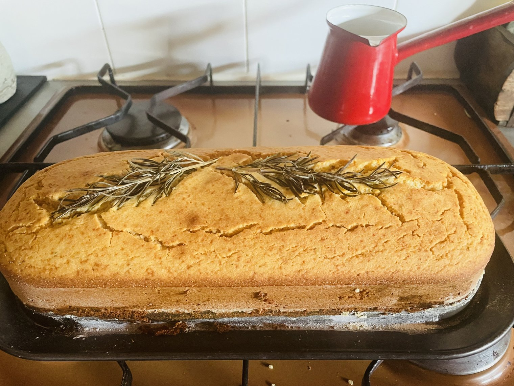

Cake sin gluten de miel y romero
Ingredients
8×
- 3 huevos
- 120 g de miel
- 100 ml de aceite de oliva
- 150 g de harina de arroz
- 100 g de almendra molida
- 1 sobre de levadura
- 1 cda de romero
- 2 ramitas de romero

Preparación
Paso 1
Batir 3 huevos con 120 g de miel y 100 ml de aceite de oliva.
Paso 2
Añadir 150 g de harina de arroz, 100 g de almendra molida, 1 sobre de levadura y 1 cda de romero picado, y mezclar.
Paso 3
Verter en un molde de cake, poner 2 ramitas de romero por encima y hornear 45min a 180ºC.